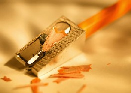

El puma es un felino de la familia Fedilae nativa de norte america
El puma es un felino de la familia Fedilae nativa de norte americaEl Puma
El puma es un felino de la familia Fedilae nativa de norte america
Torre de pizza
 La torre de Pisa o torre inclinada de Pisa es la torre campanario de la catedral de Pisa, situada en la plaza del Duomo de Pisa
La torre de Pisa o torre inclinada de Pisa es la torre campanario de la catedral de Pisa, situada en la plaza del Duomo de Pisa
Lapiz
Un lapiz o lapicero es un instrumento de escritura o de dibujo consistente en una mina o barrita de pigmento y encapsulado generalmente en un cilindro de madera fina
Pastel
 una masa de harina y manteca, cocida al horno, en que ordinariamente se envuelve crema o dulce, y fruta
una masa de harina y manteca, cocida al horno, en que ordinariamente se envuelve crema o dulce, y fruta
El Cafe
 El cafe es la bebida que se obtiene a partir de los granos tostados y molidos de los frutos de la planta del cafe
El cafe es la bebida que se obtiene a partir de los granos tostados y molidos de los frutos de la planta del cafe